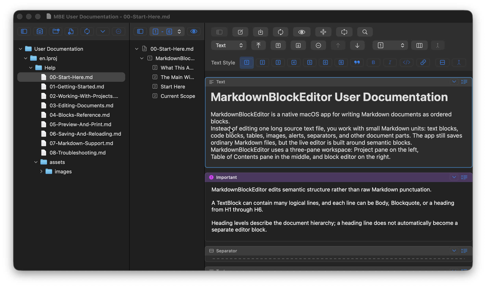
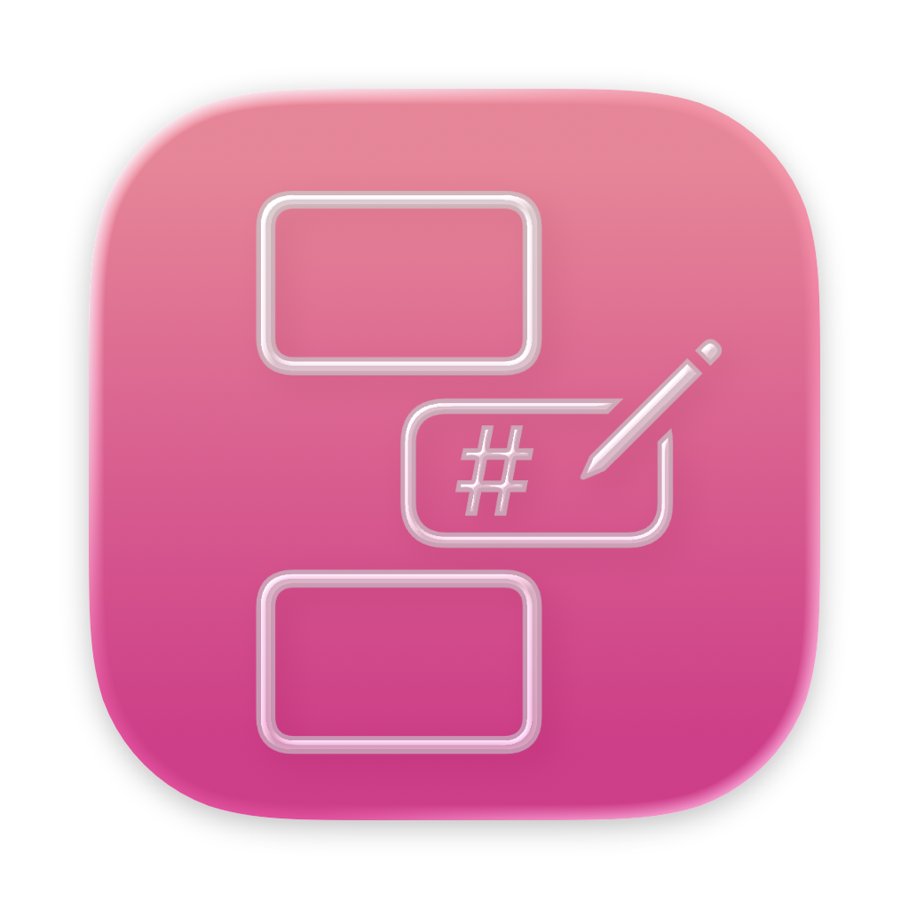
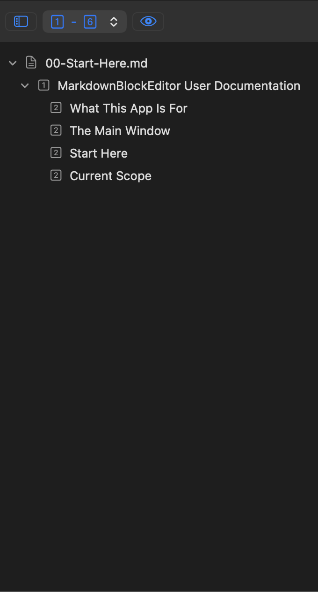
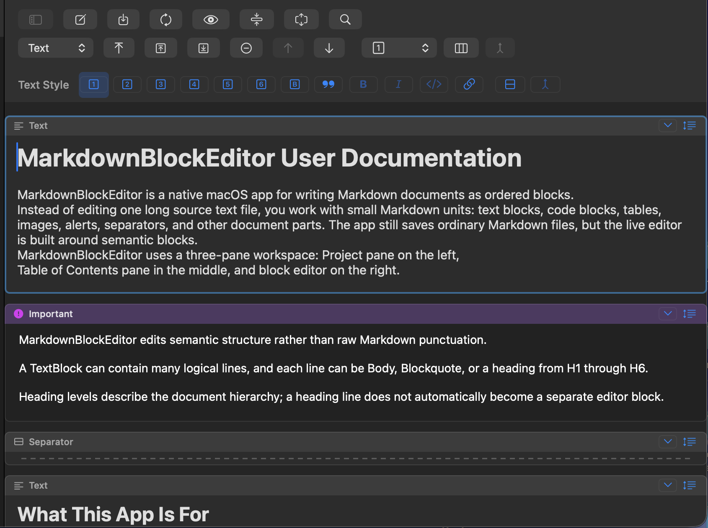

Workspace
See your whole workspace
Bring folders and Markdown files into a workspace you can save and reopen. The Project pane, Table of Contents, and Editor sit side by side, and your files stay where they are.


macOS application · MBE

See how a collection of Markdown files is organized, jump to the heading you need, and rearrange content in blocks.
Select any screenshot for a closer look, then use the arrows to browse the set.
Workspace
Bring folders and Markdown files into a workspace you can save and reopen. The Project pane, Table of Contents, and Editor sit side by side, and your files stay where they are.

Table of Contents
Select a folder or a set of files to see headings from the saved Markdown in that selection. Choose which heading levels to show, then select a heading to open its document at the block that contains it.

Block editor
Move, split, or collapse blocks to reshape a document without repeatedly cutting and pasting. Edit the text in place and save it as a Markdown file.

Open a formatted preview of the document you’re editing, including unsaved changes, or preview saved Markdown from your selected project files and folders. You can print the preview through Safari.